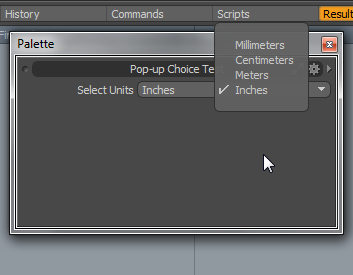

Pop-up List Choice¶
Simple example of a custom command plugin implementing an argument/attribute that can present a pop-up list of choices to a user. The Command System: Basics is:
1 | choose.me ?units:string
|
Usage¶
The units argument is both required and can be queried for its current value. If the command is executed without setting the units argument, a dialog for the command will opening so that the user can set the missing arguments, which in this case will take the form of a Units popup. If added to form such that the units argument is being queried like so:
1 | choose.me units:?
|
then it will create the Units popup in the Form View, as shown in the following image.
Theory of Operation¶
The command has a single argument, ‘’units’’. This argument is marked with the fCMDARG_QUERY flag to indicate that it can be queried for its value through the command’s cmd_Query() method. This provides the current value that is displayed in the popup, and allows scripts and other clients to read the current value themselves.
When the user makes a choice from the popup in a Form View, the argument is set to the chosen option and the command’s cmd_Execute() method is called (in the case of command dialogs, this method is called when the user clicks ‘’OK’’). At this point the command reads the argument’s value and does something interesting with it. It’s important to note that the user may execute the command manually with an arbitrary string, and that we need to handle such values gracefully. This is also true when using integers either with our without text hints – the user can always enter arbitrary values, and those need to be accounted for.
For this sample command, a User Values is used to store the chosen units in the user config, and to read it out again when the command is queried. Other commands might directly modify scene state, or use the persistence interface to write to the config file directly. For example, the item.channel command’s Execute() method directly modifies the value of the channel, and when queried returns the channel’s value. Other commands stores transient state in global variables or objects that are only valid until the application quits.
Declaring a Popup¶
The units argument is defined with the string datatype, and recognizes four strings representing different kinds of units. In the C++ SDK a fixed list like this would use instead the integer datatype and would use LXtTextValueHints, but those aren’t currently available through the Python API. While we could use an integer datatype here even without text hints, the value shown in the Command History Viewport would be fairly arbitrary integer to anyone looking at it. Using a string datatype (or an integer with text hints) makes it easier for others to tell what is going on from the Command History, and makes it simple to change the order of the options or insert new options in the future without breaking existing saved files and scripts that rely on this command.
If we were using an integer argument with text hints, a popup would be created automatically for us. Besides the fact that text hints aren’t currently available through the Python API, there are many times where the list is dynamic and can’t use text hints anyway.
To declare that we want our string argument to presented as a popup style control, we implement a UIValueHnits object and its ‘’uiv_PopCount()’’, uiv_PopInternalName() and uiv_PopUserName() and return it from our cmd_UIHints() method for the units argument’s index. We indicate that those methods are available by including fVALHINT_POPUPS in the return value from our uiv_Flags() method.
The popup methods are fairly straight-forward:
uiv_PopCount() returns the number of options in the list
uiv_PopInternalName() returns the name of the option as it will appear in the Command History, and is the actual value of the string argument that can be entered manually by a script and is read from the cmd_Execute() method, and should also be what is returned by ‘’cmd_Query()’’. This is not used by integer datatype arguments, as the value is just the index into the list.
uiv_PopUserName() returns the human-readable string that will appear in the menu for that option. This is usually a user-generated string, such as the name of an item in a scene, or is read from a message table for localization purposes.
Refreshing the Popup¶
There are two times when a popup usually needs to be refreshed:
The list of options in the popup has changed
The currently selected option has changed
Defining a new notifier or reusing an existing one is not covered here, but it is important that commands use notifiers if they are ever going to be present in a persistent part of the interface. An overview of notifiers can be found in the FAQ#Q: How do I make my command button update when the enable state changes?.
Configs¶
The config files contain the user strings for the command itself through a Command Help entry, such as its user name for the command and its arguments, a description string, etc. These are used to populate the Command List portion of the Command History viewport and provide some basic documentation for the command, as well as providing the human-readable strings for display in the UI.
The configs also contain the user value definition that we use to store our example state.
Example Source¶
This code implements the command using the Python API. The command can be run by adding it to an lxserv sub-directory of any config import path (ie: a path within which modo search for configs and scripts). For example, the user:Scripts directory (accessible from the “Open User Scripts” menu item in the “System” menu in modo) is an import path, so you can put it in ‘’user:Scripts/lxserv’’, and when modo is next launched the plug-in command will be available.
1 2 3 4 5 6 7 8 9 10 11 12 13 14 15 16 17 18 19 20 21 22 23 24 25 26 27 28 29 30 31 32 33 34 35 36 37 38 39 40 41 42 43 44 45 46 47 48 49 50 51 52 53 54 55 56 57 58 59 60 61 62 63 64 65 66 67 68 69 70 71 72 73 74 75 76 77 78 79 80 81 82 83 84 85 86 87 88 89 90 91 92 93 94 95 96 | #!/usr/bin/env python
################################################################################
#
# formpopUpList.py
#
# Version: 1.000
#
# Description: Example custom command that displays a pop-up list choice for
# setting it's attribute/argument.
#
#
# Usage: choose.me ?units:string
#
# Last Update: 13:20 01/05/13
#
################################################################################
import lx
import lxifc
import lxu.command
# the list we'll be using to populate the example pop-up. Note that it's a list
# of two tuples. The first tuple contains the 'InternalNames' of the items and
# the second contains the 'friendly' or 'UserNames'.
units = [('mm', 'cm', 'm', 'in',),
('Millimeters', 'Centimeters', 'Meters', 'Inches',)]
# The UIValueHints class we'll be using to manage the list and it's items
class UnitsPopup(lxifc.UIValueHints):
def __init__(self, items):
self._items = items
def uiv_Flags(self):
# This can be a series of flags, but in this case we're only returning
# ''fVALHINT_POPUPS'' to indicate that we just need a straight pop-up
# List implemented.
return lx.symbol.fVALHINT_POPUPS
def uiv_PopCount(self):
# returns the number of items in the list
return len(self._items[0])
def uiv_PopUserName(self,index):
# returns the Username of the item at ''index''
return self._items[1][index]
def uiv_PopInternalName(self,index):
# returns the internal name of the item at ''index' - this will be the
# value returned when the custom command is queried
return self._items[0][index]
# The custom command class that implements a list attribute/argument
class CmdMyPopUpCommand(lxu.command.BasicCommand):
def __init__(self):
lxu.command.BasicCommand.__init__(self)
# Add a string attribute. Note: this could also be an integer if the list
# is static rather than dynamic and ''TextValueHints'' are used. Currently
# ''TextValueHints'' aren't implemented in the python API so it's
# adviseable to use a string attribute.
self.dyna_Add('units', lx.symbol.sTYPE_STRING)
# Set the attribute's queriable flag
self.basic_SetFlags(0, lx.symbol.fCMDARG_QUERY)
def arg_UIValueHints(self, index):
# create an instance of our pop-up list object passing it the
# list of commands.
if index == 0:
return UnitsPopup(units)
def cmd_Execute(self,flags):
# in the execute method we're going to store the current value of our
# attribute so that it can be retrieved by the query method later. There's
# no way to permanently store this information inside the command class
# itself as the command is created & destroyed between each use. Normally
# we'd want to be using persistent storage but for simplicity in this
# example we'll use a UserValue.
if self.dyna_IsSet(0):
lx.eval('user.value {CmdMyPopUpCommand_val} {%s}' % self.dyna_String(0))
def cmd_Query(self,index,vaQuery):
# In the query method we need to retrieve the value we stored in the execute
# method and add it to a ValueArray object to be returned by the query.
va = lx.object.ValueArray()
# Initialise the ValueArray
va.set(vaQuery)
if index == 0:
# retrieve the value we stored earlier and add it to the ValueArray
va.AddString(lx.eval('user.value {CmdMyPopUpCommand_val} ?'))
return lx.result.OK
# bless() the command to register it as a plugin
lx.bless(CmdMyPopUpCommand, "choose.me")
|
User Value Definition Config¶
The User Values we use to store the current value set in the list choice is defined in a config file/fragment.
1 2 3 4 5 6 7 8 9 10 11 | <?xml version="1.0"?>
<configuration>
<atom type="UserValues">
<hash type="Definition" key="CmdMyPopUpCommand_val">
<atom type="Type">string</atom>
</hash>
<hash type="RawValue" key="CmdMyPopUpCommand_val">mm</hash>
</atom>
</configuration>
|
Command Help Config¶
Finally, to ensure that any strings (names etc) associated with our command and it’s arguments are translatable we define them in a Command Help block of a config file.
1 2 3 4 5 6 7 8 9 10 11 12 13 14 15 16 17 18 | <?xml version="1.0"?>
<configuration>
<atom type="CommandHelp">
<hash type="Command" key="choose.me@en_US">
<atom type="UserName">Form Pop-up Example</atom>
<atom type="ButtonName">Select Units</atom>
<atom type="Desc">Example of a form pop-up menu</atom>
<atom type="ToolTip">Form Pop-up Example</atom>
<hash type="Argument" key="units">
<atom type="UserName">Units</atom>
<atom type="Desc">Select which units to use.</atom>
<atom type="ToolTip">Select which units to use for the conversion.</atom>
</hash>
</hash>
</atom>
</configuration>
|